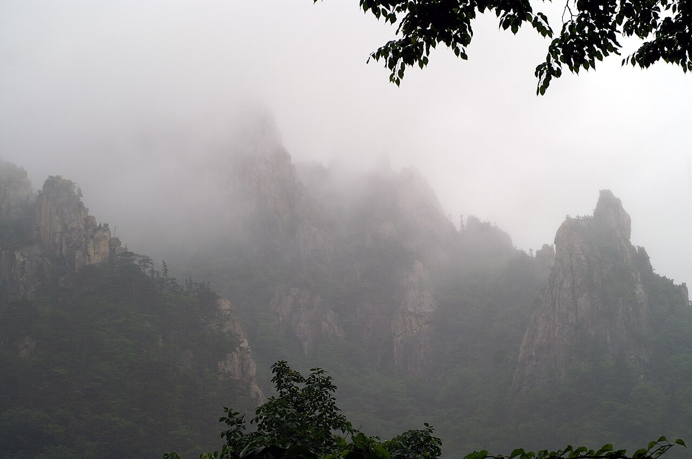
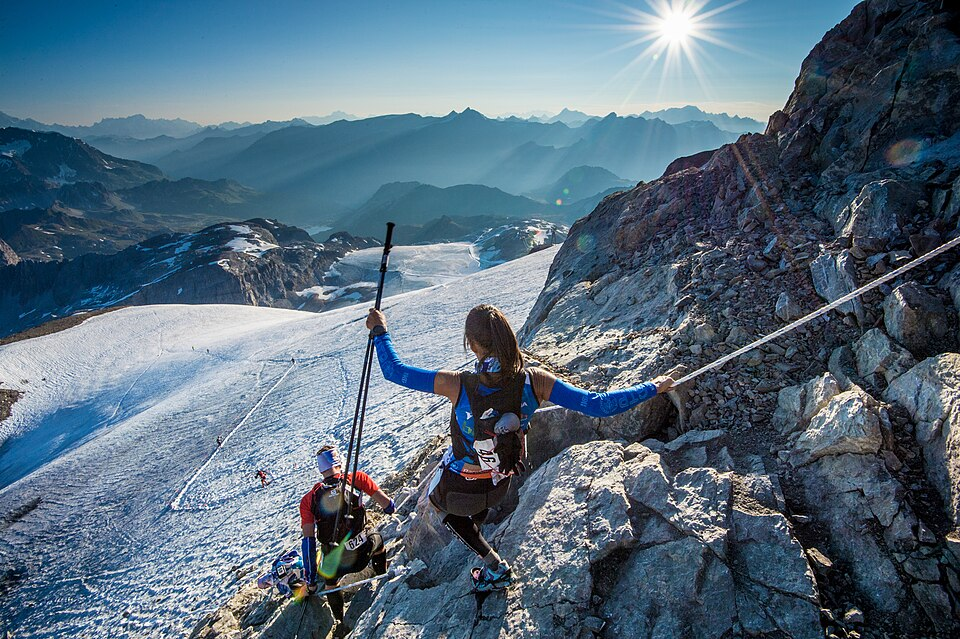

50K
- 출발05:00
- 제한 시간12시간
- 체크포인트4곳
- 참가비미정

50K, 25K, 10K 코스의 출발 시각과 컷오프, 필수 장비, 취소 규정을 신청 전에 확인하세요. 참가 신청은 2027년 1월 말에 시작합니다.
이 시각까지 체크포인트를 지나지 못하면 레이스를 이어 갈 수 없습니다.

대회 전날 장비 검사에서 하나라도 빠지면 배번을 받을 수 없습니다.

아직 정해지지 않은 항목은 접수 시작 전에 이 자리에 올립니다.
환불 기간과 수수료는 아직 정해지지 않았습니다. 접수 일정과 함께 공개합니다.
코스별 참가 자격은 아직 정해지지 않았습니다. 50K는 완주 경험을 확인할 수 있습니다.
코스 변경 방법은 환불 규정과 함께 안내합니다.
선착순인지 추첨인지 아직 정해지지 않았습니다.